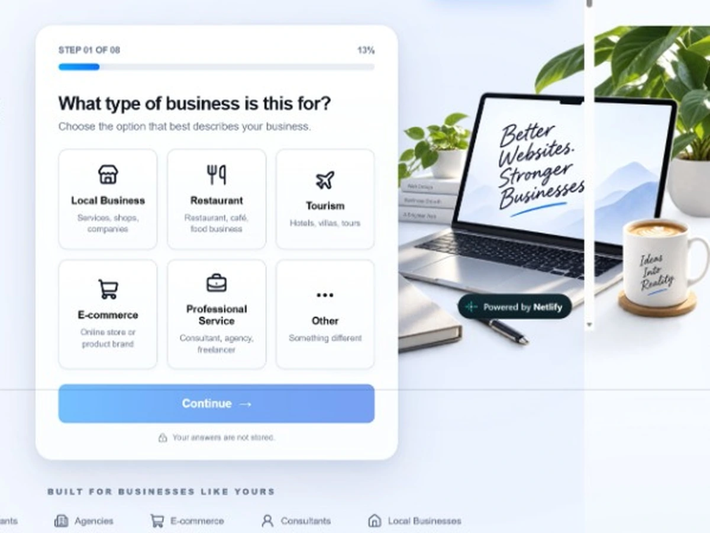
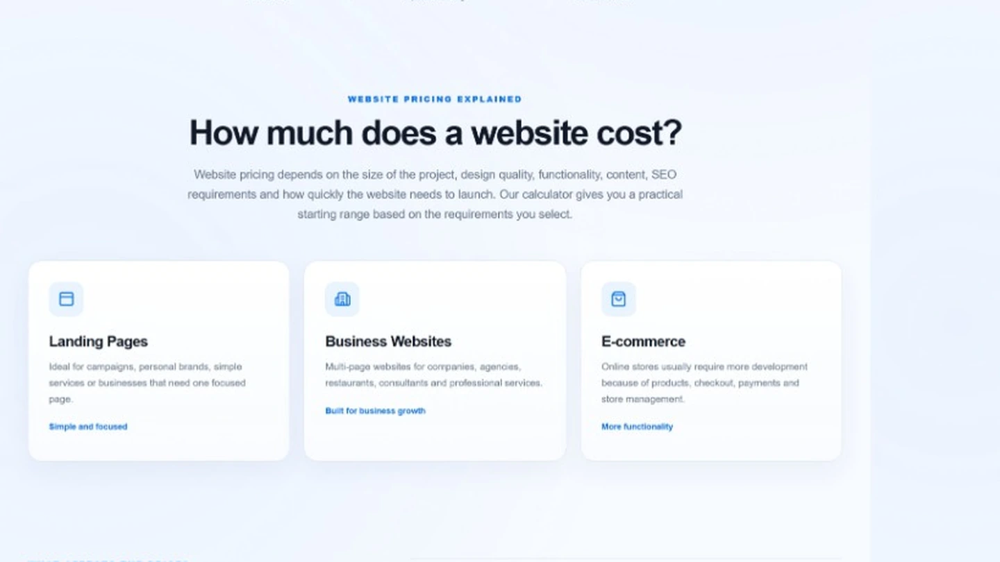

01
Guided requirements
Step through business type, website scope, page count and visual design needs.
A free browser-based calculator that guides business owners through project requirements and produces an indicative website budget range — not a binding quote.
Founder-built browser application · Published product · No claimed performance metrics

Businesses often ask 'How much will my website cost?' before they've decided how many pages they need or whether they want bookings, payments or online sales. I wanted to make that initial conversation clearer for the business owner and for the developer.
Built to make website scoping and early client conversations more understandable.
A free browser-based calculator that guides business owners through project requirements and produces an indicative website budget range — not a binding quote.
Designed to be easy to explore, useful before making a decision, and honest about what the outputs do and do not mean.
Each capability supports the task the user came to complete, rather than adding features just to make the interface look busy.
Step through business type, website scope, page count and visual design needs.
Consider e-commerce, bookings, integrations and other development requirements.
Receive an indicative estimate range based on the options selected.
A multi-step, responsive interface keeps planning approachable instead of overwhelming users.
Understand how design complexity, content, SEO and integrations can influence cost.
Take the estimate into a conversation with Mohsin Builds about the real project scope.
Design and implementation were driven by a straightforward progression.
Start with the common questions businesses ask before ordering a website.
Break requirements into understandable choices rather than technical jargon.
Turn selected requirements into a dynamic indicative budget range.
Explain why a detailed discovery call is still needed before a formal quotation.
Real preview assets from the Mohsin Builds project library. Try the working product to explore its inputs and outputs.


Built as a responsive front-end product that runs in the browser without requiring a backend. The calculations rely on the values provided by the user.
The interface and calculations use standard web technologies; the experience is published using GitHub Pages.
The calculator is a planning guide, not a fixed Mohsin Builds quotation. Actual pricing depends on confirmed scope, integrations, content, technical constraints and delivery expectations. No conversion, lead volume or revenue metrics are claimed.
A useful lead-generation experience starts by giving the visitor clarity, not by asking for contact information before helping them.
It reflects my approach to problem discovery, interaction design, front-end engineering and practical digital product delivery.
The product is available to try. If you're exploring something similar, let's talk about the actual problem.